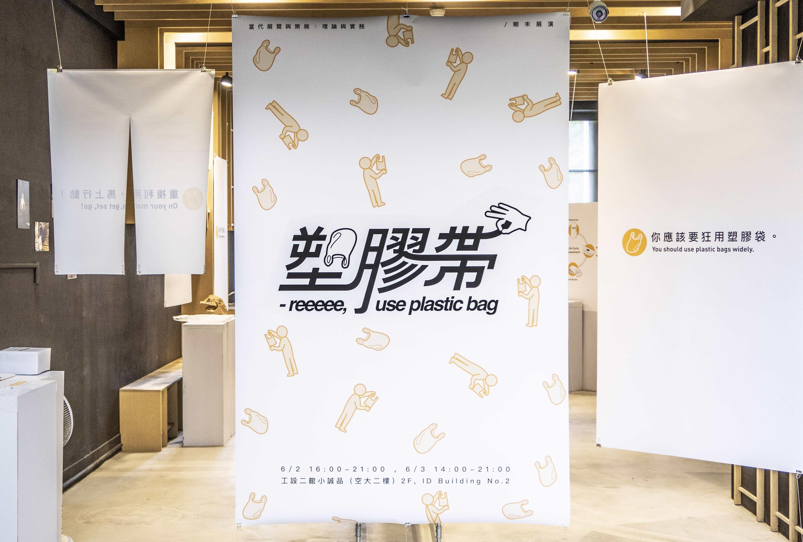
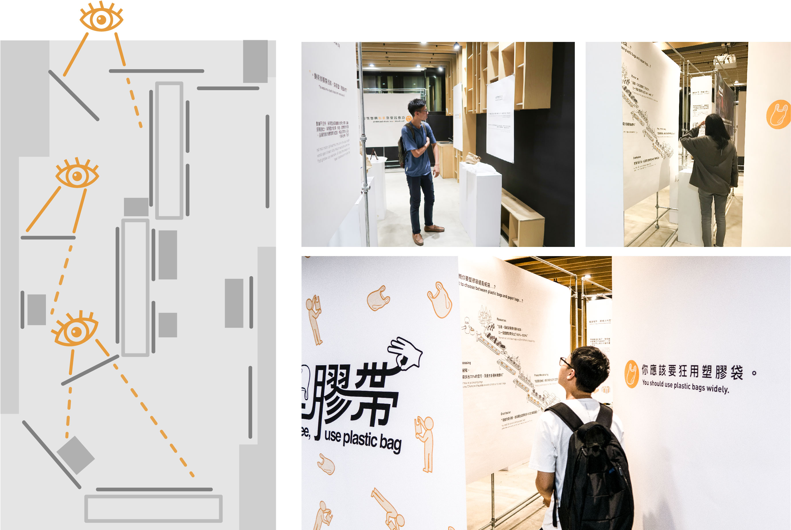

Sophia Tseng
Inspired by the simPLASTIC project, three of my friends and I decided to curate an exhibition to promote reuse of plastic bags. This is an experience-focused project, and we created everything from scratch!
⊹ The stairs represent the high and low of the viewers' experience, not the actual interior ⊹
At the end of plastic bag’s life cycle, if you choode “use”, you get a land coverred by trash;
if you choose “reuse”, you get a clean wholesome landscape!
Essentially, we want to make the most out of the relatively small venue that we have since there is a lot to deliver. Key principles that we bore in mind are: ‘No spoiler’ and ‘spread out the text-heavy stages’.
We designed the venue to be a route, so viewers will see the contents in the designed sequence. To prevent Spoilers, the arrangement of every single display has been carefully thought out.
Andy Cheng
Sophia Tseng
Sophia Chou
Darren Lee